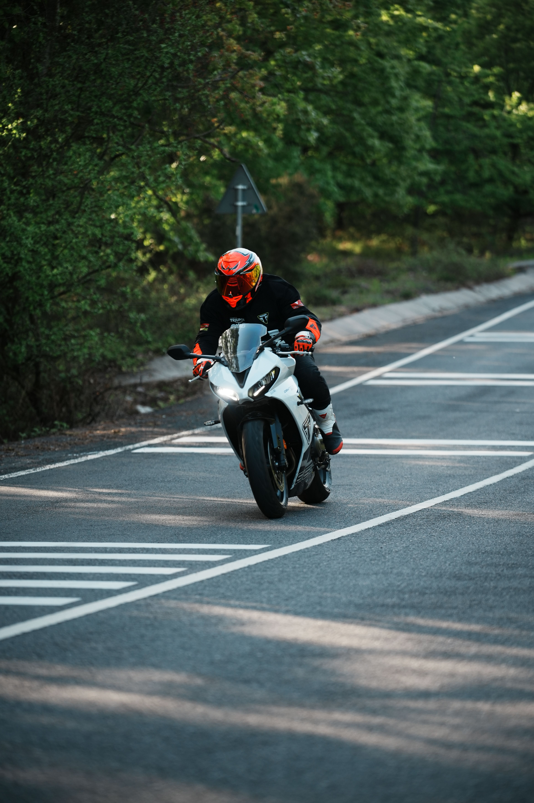
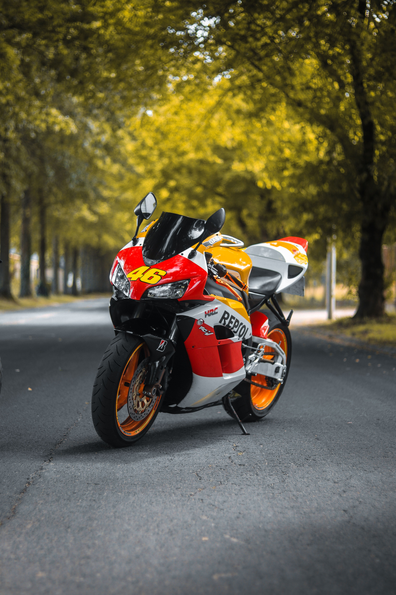
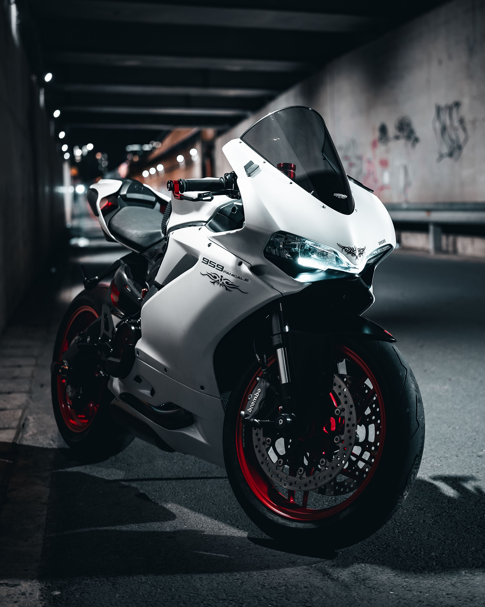

Sports bikes are built for speed, quick acceleration, and sharp handling on the road. They have a lightweight design, powerful engines, and an aggressive riding position that makes them exciting to ride.

Sports bikes are known for their sleek look and high performance, making them popular among riders who enjoy speed and control. They are designed with advanced brakes, strong suspension, and aerodynamic bodywork for a smoother and faster ride.

Sports bikes offer a thrilling riding experience because they are made for power, balance, and fast movement. Many riders like them for their stylish appearance and the excitement they bring on highways and open roads.

Sports bikes are designed to deliver high speed and smooth performance for riders who enjoy adventure. Their modern design and strong engines make them one of the most exciting types of motorcycles.

Sports bikes are fast, stylish motorcycles built for performance and excitement on the road.